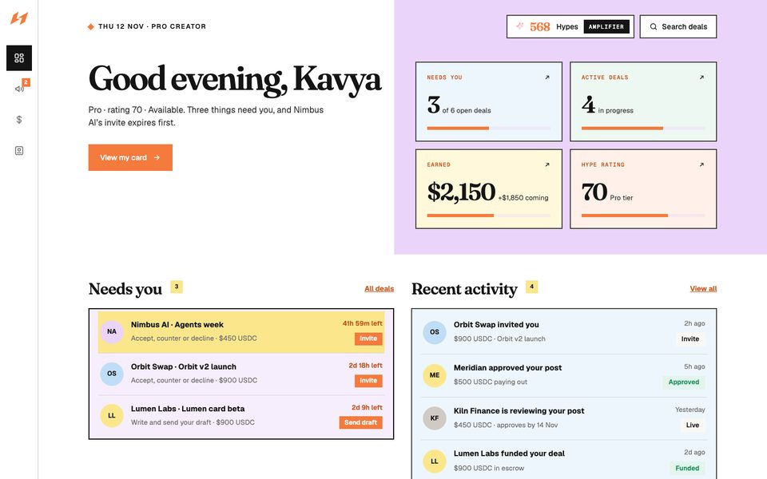
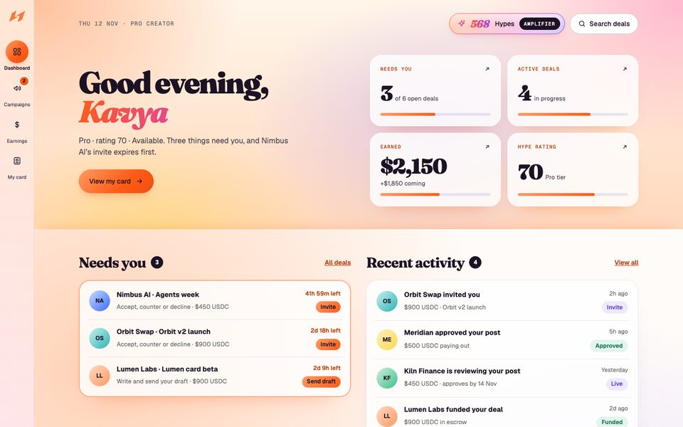

v2 · latestUI v0.4 · 23 Nov 2026
S-22 Editorial · colour
The same screens and flows as v1 in the new editorial style: sharper type, flat colour blocks and square edges.
Clickable prototypes of the HypeMan app: the KOL side, the brand side and admin, on desktop and mobile. Open a version and click through it like the real app. The newest version is first.

The same screens and flows as v1 in the new editorial style: sharper type, flat colour blocks and square edges.

The earlier design with soft gradient backgrounds and rounded cards. Kept for comparison.